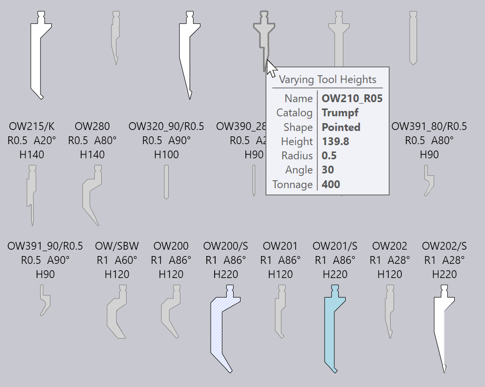
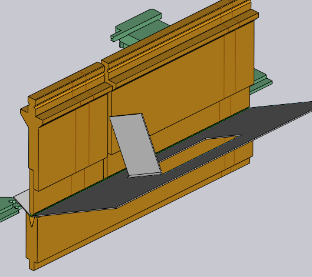

编辑模具装置
当您单击模具装置时，将显示折弯装置面板，由此可编辑折弯装置的各种设置，并执行多个操作。
折弯装置面板

“折弯装置”面板看起来像旁边的图像。可用的确切设置和操作会有所不同，具体取决于您单击上模、下模还是适配器装置。此外，某些设置可能可用或不适用，具体取决于机床功能。
-
单击更改模具类型按钮，可使用不同的模具替换用于所选装置的模具。（有关用于选择替换模具的_模具选择器_的更多详细信息，请参阅以下部分）。
-
长度 输入用于调整工站的长度。当您在此处键入新值时，TecZone Bend将再次使用适当的一组_段_来组合工站，以尝试尽可能地匹配请求的长度。您可以通过查看显示在折弯装置上的段边界线来目检使用的段。
-
位置 输入用于设置装置的_左边缘_的位置，沿着机床的工作台或滑块。位置也可以通过左右_拖动_装置进行调整。（请参阅下面关于拖动装置的部分）。
-
角式模具 选择器（仅显示用于上模装置）可用于强制TecZone Bend 使用左侧和/或右侧[1]组合中的件）。
-
旋转模具 用于翻转模具（从前到后）。当您编辑使用_非对称_模具（如鹅颈模具）的装置时显示。翻转操作足够智能，可以计算出：是否需要翻转其他支架和模具以保持一致性。例如，在下图中，翻转OW_Z4上模（用于Z 向折弯）也会翻转下模、支架甚至零件，以保持工艺的一致性：

-
添加适配器 用于添加_扩展器_以增加上模或下模的高度。当您添加适配器时，适配器将被选中并显示适配器的面板（这允许您更改实际使用的适配器或将其移除）。

-
添加列 用于在模具装置中添加间隙，以允许法兰在没有碰撞的情况下通过（有关更多信息，请参阅下面关于添加间隙的部分）。
-
较高模具 用于将所选模具替换为来自同一系列的更高的不同模具。
-
单击*删除*以卸下模具装置。在使用此工站的折弯的折弯导航器中显示_缺少上模_或_缺少下模_错误，这可以通过使用左侧命令栏上的*添加*来修复，以添加新装置。
-
传感器模具 选择器用于在可用于此零件的不同的ACB探片对中进行浏览。选择取决于板材厚度，以及正在使用的上模。
-
如果选中件数检查复选框，则根据可用的件_库存_检查所用的段（可以点击模具管理 … 链接进行编辑）。如果使用不在库存中的段，将在其上绘制一个特殊的三叶草符号，如您在下图中所见——靠近上模中心的40mm和45mm件：

当您使用任何这些设置和操作编辑模具装置时，TecZone Bend将立即验证所有折弯操作的状态，执行各种检查，如碰撞、模具可用性等。折弯导航器状态立即实时更新，使您可以非常轻松地尝试各种设置，并立即和准确地反馈。
“替换模具”窗口
单击更改模具类型按钮时，替换模具窗口出现：

此窗口显示所有可能的替换模具。
-
使用左侧的层次结构来缩小选择范围——例如，您可以选择仅显示鹅颈模具，以便更轻松地进行选择。
-
使用顶部的排序选择器，可按名称、高度、半径或其他排序标准进行排序（确切的排序标准集取决于您是否更换上模、下模或适配器）。
-
您可以在搜索框中输入模具名称（或简称），以便快速缩小列表范围。也可以输入部分模具名称，例如使用OW200，将匹配OW200、OW200/S和OW200/K模具。
-
使用缩放滑块调整模具图像的大小。目前使用的模具采用蓝色填充和粗轮廓。浅蓝色十字阴影表示本零件使用的_其他模具_。
-
关闭过滤器复选框可不受限制地查看所有模具（无论它们是否合适）。在此视图中，不合适的模具呈灰色，将鼠标移动到其中一个模具上将显示它_为什么_不可选择：

当您将鼠标移到模具图像上时，TecZone Bend将_立即_ 使用新选定的模具重新计算所选的模具装置，您可以实时看到您正在考虑的模具是否会导致任何碰撞问题（如有碰撞，折弯导航器中的相应折弯将立即以红色亮起）。这种实时预览让您可用非常轻松地尝试使用各种模具选择，直到找到一个合适的模具。如果单击其中一个模具，则会做出选择并应用新模具到零件。反之，如果按下Esc，您所做的预览选择将被还原，原始模具保持不变。


高级操作
以下是使用“折弯装置”编辑器面板的一些更高级的操作。
编辑模具装置段
编辑折弯模具装置时，单击段导航按钮将打开_模具段_面板，看起来像旁边的图像。

-
模具 选择器用于将所选模具段替换为更长或更短的件，或不同类型的件。
-
< 移动 和移动 >按钮用于在组合中向左或向右移动所选段。这不会改变组合的总长度，但对于向左或向右移动止挡探针件很有用，例如用于避免孔洞。
-
添加 和删除按钮用于添加新段到组合中，或将所选段从组合中删除。
-
返回 和继续导航按钮用于循环编辑折弯装置中的不同段。如上图所示，正在编辑的模具段以蓝色突出显示。
-
装备 导航按钮用于向上移动一个级别，并编辑整个折弯装置，而不是单个段。
在装置中添加间隙
有时在模具装置上增加一个狭窄的_间隙_是有用的，通常是为了让法兰通过而不会发生碰撞。要执行此操作，请点击 添加列 按钮（如果模具装置足够长，则会显示该按钮）。一个小区域在面板中打开，带有一组相互关联的输入，用于设置左边距、右边距和实际间隙。由于这三者的总和必须加到模具装置长度上，编辑其中两个将自动设置第三个。
下图显示了正在进行的操作。因为一个法兰与上模碰撞，我们调整左/右边距，直到建议的间隙与法兰和上模相交的位置对齐（您可以看到建议的间隙显示为折弯装置上描绘的两条橙色线）。

当您单击此子面板中的确定按钮时，将创建间隙，您可以看到碰撞错误现已解决：

| 当编辑使用上模支架的工站时，TecZone Bend询问间隙是否应仅针对上模或上模和支架两者被引入。 |